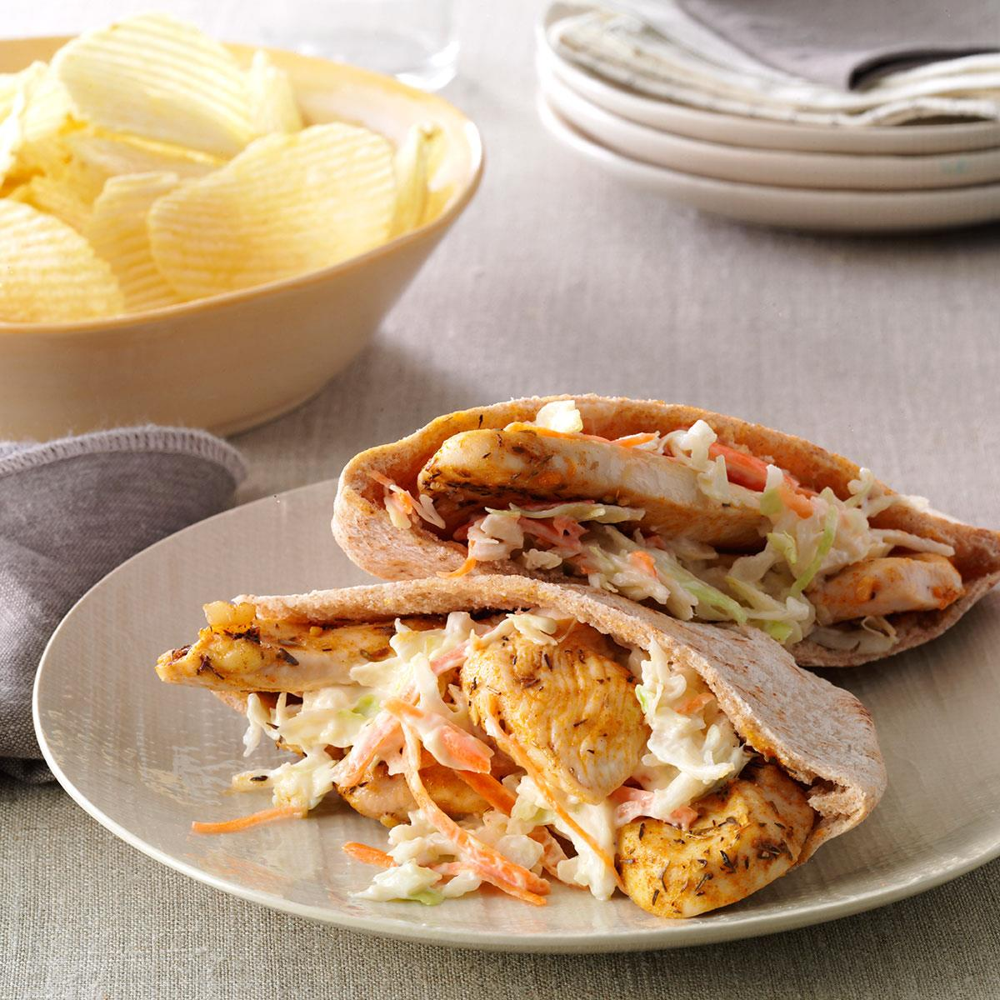

Chicken Stuffed Pita Pocket
Ingredients
- 1 pound boneless, skinless chicken breasts, cooked and shredded
- 1/2 cup hummus
- 1/2 cup chopped vegetables (such as tomatoes, cucumbers, and red onion)
- 1/4 cup chopped fresh parsley
- 1/4 cup crumbled feta cheese
- 4 pita breads, halved
Instructions
- To assemble the pita pockets, spread hummus on the bottom half of each pita bread.
- Top with the chicken, vegetables, parsley, and feta cheese.
- Serve immediately.
Tips
- For a spicier chicken, you can add a teaspoon of your favorite chili powder or cayenne pepper to the chicken before cooking.
- If you don't have hummus, you can substitute another type of dip, such as tzatziki or baba ghanoush.
- You can also add other toppings to your pita pockets, such as lettuce, olives, or roasted red peppers.
- Enjoy!
Variations
- For a vegetarian version, you can substitute tofu for the chicken.
- For a healthier version, you can use whole-wheat pita bread and low-fat or fat-free hummus.
- You can also make this recipe ahead of time. Simply assemble the pita pockets without the vegetables and cheese. Cover and refrigerate for up to 24 hours. When you're ready to eat, top with the vegetables and cheese and serve.